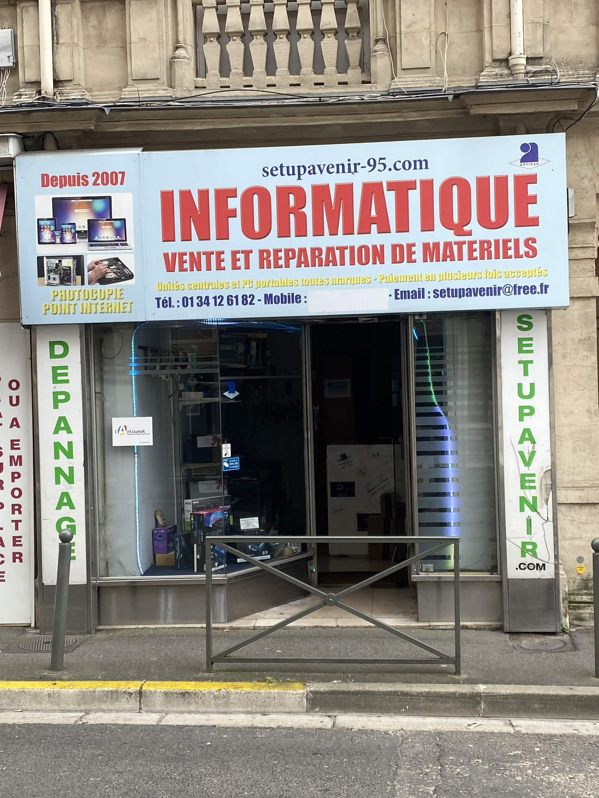

20 ans de Maintenance et de Réparation Informatique à Montmorency
Setup Avenir est né de la passion d'un technicien pour l'informatique et du désir d'offrir à Montmorency un service de proximité, honnête et compétent. Depuis plus de 20 ans, nous réparons, conseillons et formons les habitants du Val-d'Oise.
Des centaines d'avis positifs de clients fidèles

Une expertise construite
pas à pas
Il y a plus de 20 ans
Ouverture du magasin à Montmorency. Dès le début, le bouche-à-oreille fonctionne : les clients satisfaits reviennent et recommandent.
Les années 2005–2010
Montée en compétences sur les PC portables, expansion vers la récupération de données — une spécialité rare à l'époque dans la région.
2010–2020
Développement des compétences gaming et montage PC sur mesure. Accompagnement des nouvelles générations d'utilisateurs.
Aujourd'hui
Un magasin de référence dans le Val-d'Oise, reconnu pour son sérieux, ses tarifs transparents et ses excellents avis Google.

Nos Valeurs
Transparence
Devis gratuit, tarifs expliqués, pas de mauvaises surprises. Vous savez toujours ce que vous payez et pourquoi, avant d'engager la réparation.
Réactivité
Votre temps est précieux. Nous faisons le maximum pour rendre votre machine rapidement, souvent le jour même pour les interventions simples.
Proximité
Un magasin de quartier où l'on vous connaît par votre prénom. Pas un numéro dans une file d'attente, mais un client que l'on prend le temps d'écouter.
Excellence
20 ans d'expérience, des centaines de clients satisfaits et une note Google qui parle d'elle-même. Nous ne nous contentons pas du minimum.